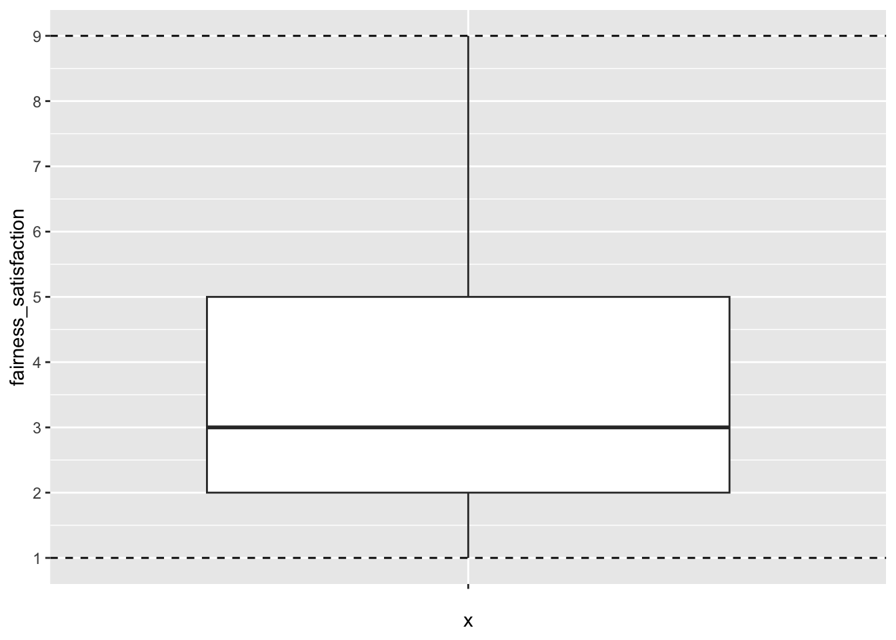
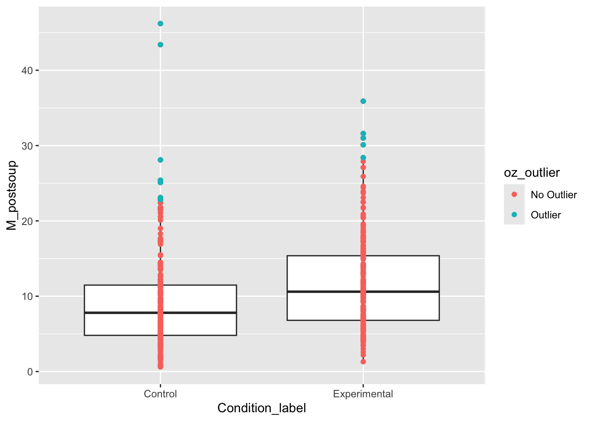
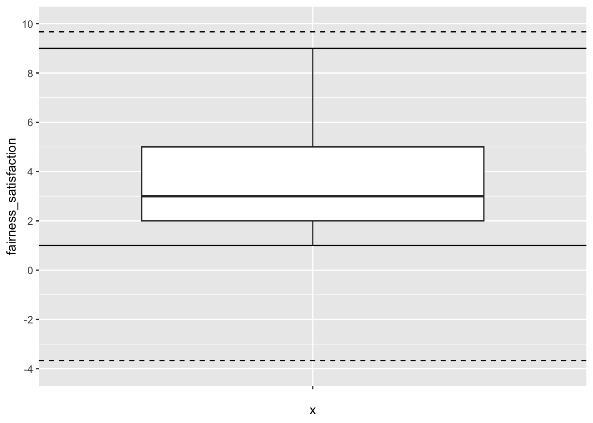
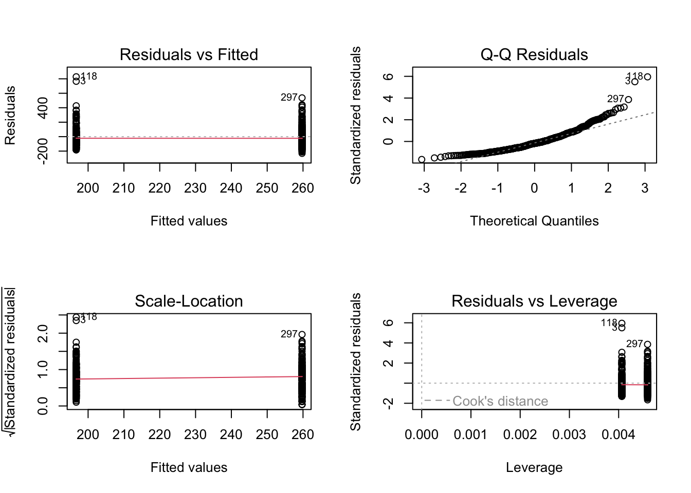
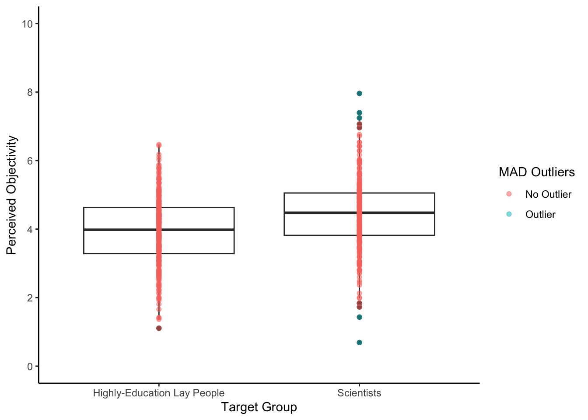
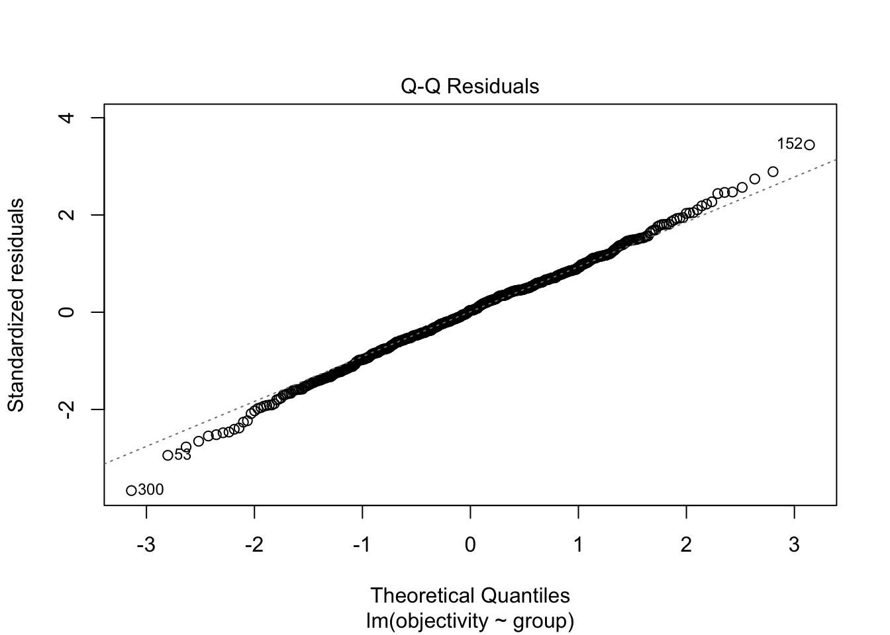
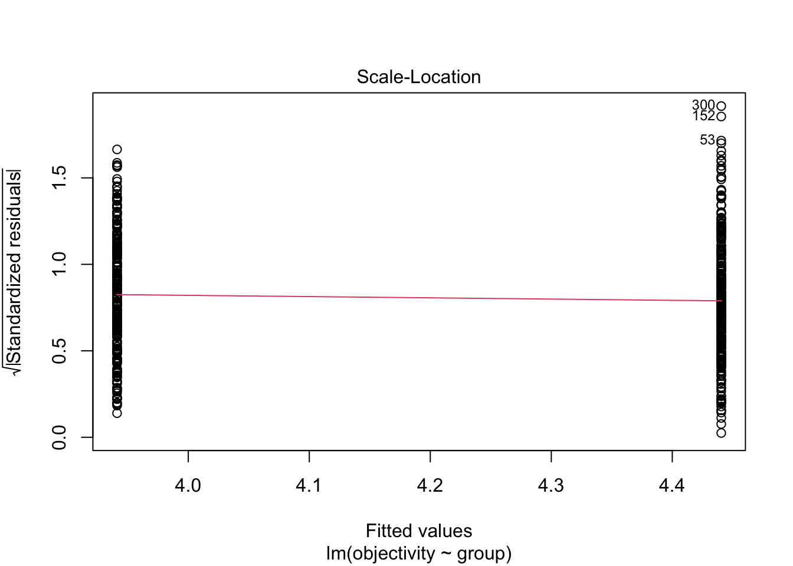

# load the relevant packages
library(performance)
library(tidyverse)
# Read the Dawtry_2015_clean.csv file
dawtry_clean <- read_csv("data/Dawtry_2015_clean.csv")
# Read the Lopez_2023.csv file
lopez_data <- read_csv("data/Lopez_2023.csv")
# recode condition
lopez_clean <- lopez_data %>%
mutate(Condition_label = case_match(Condition,
0 ~ "Control",
1 ~ "Experimental"))4 Missing data, outliers, and checking assumptions
In this chapter, you will work on decisions that come up in data analysis. In Chapters 1-3, you learnt about different inferential statistics and checking assumptions, but not what your options are once you experience different problems. In this chapter, you will learn about identifying and excluding missing data, different strategies for identifying and excluding extreme values or outliers, and your options when checking modelling assumptions.
Chapter Intended Learning Outcomes (ILOs)
By the end of this chapter, you will be able to:
Identify missing data and justify your strategy for excluding missing data.
Identify extreme values or outliers and justify your strategy for handling them.
Justify your choice of statistical test or modelling approach given assumption checks.
4.1 Chapter preparation
4.1.1 Organising your files and project for the chapter
For this chapter, we are going to revisit the data sets you worked with in Chapters 1 (Dawtry et al., 2015) and 2 (Lopez et al., 2023). They each presented some useful examples for checking modelling assumptions and the decisions that go into data analysis. We might not use both data sets for each topic we cover, but they will be useful to demonstrate some of the problems and decisions we highlighted in previous chapters, but did not explore solutions.
Before we can get started, you need to organise your files and project for the chapter, so your working directory is in order.
In your folder for research methods and the book
Stats_Research_Design, create a new folder called04_screening_data. WithinStats_Research_Design, create two new folders calleddataandfigures.Create an R Project for
04_screening_dataas an existing directory for your chapter folder. This should now be your working directory.Create a new Quarto document and give it a sensible title describing the chapter, such as
04 Missing Data, Outliers, and Assumptions. Save the file in yourStats_Research_Designfolder.The Dawtry et al. (2015) data wrangling steps were quite long, so please save this clean version of the data to focus on screening data in this chapter: Dawtry_2015_clean.csv. You will also need to save the data from Lopez et al. (2023) if you have not downloaded it yet: Lopez_2023.csv. Right click the link and select “save link as”, or clicking the link will save the files to your Downloads. Make sure that you save the files as “.csv”. Save or copy the files to your
data/folder withinStats_Research_Design.
You are now ready to start working on the chapter!
4.1.2 Activity 1 - Read and wrangle the data
As the first activity, try and test yourself by completing the following task list to read and wrangle the two data files. There is nothing extra to do with this version of the Dawtry data and one small step for the Lopez data.
Try this
To read and wrangle the data, complete the following tasks:
-
Load the following packages:
performance tidyverse
Read the data file
data/Dawtry_2015_clean.csvto the object namedawtry_clean.Read the data file
data/Lopez_2023.csvto the object namelopez_data.-
Create a new object called
lopez_cleanbased onlopez_data:- Create a new variable called
Condition_labelby recodingCondition. “0” is the “Control” group and “1” is the “Experimental” group.
- Create a new variable called
Show me the solution
You should have the following in a code chunk:
4.2 Missing data
Checking whether data are missing are relatively straight forward. Missing valuesIf a participant or observation contains no data for one or more cells, they have missing data. in a spreadsheet will be recorded as NA and there are a few ways of identifying them. The much more difficult part of missing data is considering why they are missing in the first place. For example, it might be because:
Your participants accidentally missed a question.
You made a mistake while setting up your questionnaire/experiment and some responses did not save.
Your participants intentionally did not want to answer a question.
Your participants did not turn up to a final testing session.
For the first two reasons, it is not ideal as we are losing data but there is no systematic pattern to why the data is missing. For the latter two reasons, there might be a relationship between a key variable and whether the data are missing. This is where it is particularly important to consider the role of missing data. We are focusing on data skills here rather than the conceptual understanding, but missing data are commonly categorised as:
For this course, we do not have time to investigate strategies to address missing data apart from focusing on complete cases and ignoring missing data, but you might find Jakobsen et al. (2017) useful if you want to explore options like data imputation.
4.2.1 Activity 2 - Identifying missing data
Returning to data skills, the simplest way of getting an overview of whether any data are missing is using the summary() function. For this part, we will focus on dawtry_clean from Dawtry et al. (2015).
PS Household_Income Political_Preference age
Min. : 1 Min. : 20 Min. :1.000 Min. :19.0
1st Qu.: 77 1st Qu.: 25000 1st Qu.:3.000 1st Qu.:28.0
Median :153 Median : 42000 Median :4.000 Median :33.5
Mean :153 Mean : 54732 Mean :4.465 Mean :37.4
3rd Qu.:229 3rd Qu.: 75000 3rd Qu.:6.000 3rd Qu.:46.0
Max. :305 Max. :350000 Max. :9.000 Max. :69.0
NA's :4 NA's :4 NA's :1
gender Population_Inequality_Gini_Index Population_Mean_Income
Min. :1.00 Min. :14.26 Min. : 14205
1st Qu.:1.00 1st Qu.:31.10 1st Qu.: 47250
Median :1.00 Median :35.66 Median : 58650
Mean :1.48 Mean :35.51 Mean : 58605
3rd Qu.:2.00 3rd Qu.:40.73 3rd Qu.: 67875
Max. :2.00 Max. :57.45 Max. :138645
NA's :3
Social_Circle_Inequality_Gini_Index Social_Circle_Mean_Income
Min. : 2.00 Min. : 12000
1st Qu.:19.79 1st Qu.: 36000
Median :25.59 Median : 51060
Mean :26.35 Mean : 54294
3rd Qu.:33.27 3rd Qu.: 66375
Max. :61.36 Max. :148500
fairness_satisfaction redistribution
Min. :1.000 Min. :1.00
1st Qu.:2.000 1st Qu.:3.25
Median :3.000 Median :4.00
Mean :3.539 Mean :3.91
3rd Qu.:5.000 3rd Qu.:4.75
Max. :9.000 Max. :6.00
We get a range of summary statistics for each variable but importantly for our purposes here, the final entry is NA's, where relevant. We can see there are 4 missing values for household income, 4 for political preference, 1 for age, and 3 for gender.
Try this
If you explore lopez_clean from Lopez et al. (2023), do we have any missing data to worry about?
Solution
Yes, it looks like there is also a small amount of missing data here. There is 1 for sex, 2 for estimated ounces, and 3 for estimates calories.
ParticipantID Sex Age Ethnicity
Min. :1001 Min. :0.0000 Min. :18.00 Min. :1.000
1st Qu.:1202 1st Qu.:1.0000 1st Qu.:19.00 1st Qu.:3.000
Median :1462 Median :1.0000 Median :20.00 Median :3.000
Mean :1456 Mean :0.8099 Mean :20.47 Mean :3.261
3rd Qu.:1704 3rd Qu.:1.0000 3rd Qu.:21.00 3rd Qu.:4.000
Max. :1928 Max. :3.0000 Max. :54.00 Max. :8.000
NA's :1
OzEstimate CalEstimate M_postsoup F_CaloriesConsumed
Min. : 0.010 Min. : 1.0 Min. : 0.600 Min. : 13.31
1st Qu.: 2.000 1st Qu.: 50.0 1st Qu.: 5.575 1st Qu.: 123.65
Median : 4.000 Median : 90.0 Median : 8.700 Median : 192.97
Mean : 6.252 Mean :124.6 Mean :10.203 Mean : 226.30
3rd Qu.: 8.000 3rd Qu.:160.0 3rd Qu.:13.125 3rd Qu.: 291.11
Max. :100.000 Max. :800.0 Max. :46.200 Max. :1024.72
NA's :2 NA's :3
Condition Condition_label
Min. :0.0000 Length:464
1st Qu.:0.0000 Class :character
Median :0.0000 Mode :character
Mean :0.4698
3rd Qu.:1.0000
Max. :1.0000
4.2.2 Activity 3 - Removing missing data
Once we know whether missing data are present, we must consider what to do with them. For this chapter, we are only going to control removing participants, but you could apply a data imputation technique at this point if appropriate.
For all the modelling techniques we apply in this book, the functions will remove participants who have one or more missing values from any variable involved in the analysis. The functions will give you a warning to highlight when this happens, but it is normally a good idea to remove participants with missing data yourself so you have a note of how many participants you remove.
For dawtry_clean, the drop_na() is the easiest way of removing missing data, either participants with any missing data or by specifying individual variables.
We can compare the number of participants by using the nrow() function to count how many rows are in each object.
[1] 305[1] 301[1] 294Like most data skills and statistics concepts, the key skill here comes in decision making; documenting and justifying the approach that you take.
4.3 Outliers
The next data screening concept revolves around identifying potential outliers. Like missing data, the difficulty here comes in first deciding what an outlier is and then deciding on what to do with it. Leys et al. (2019) mention one study found 14 definitions and 39 unique ways of identifying outliers, so this is our second key area of decision making. Leys et al. categorise outliers into three types:
Even simpler, we can consider values as legitimate or not legitimate. Error outliers would be not legitimate as they represent a mistake or error, so they would potentially provide misleading results. These are values you can justify removing or correcting as they should not be there in the first place.
Interesting and random outliers would be legitimate as they are not clear mistakes or errors; they are just different to the majority of values in the data. In most cases, it is not a good idea to remove these kind of values as they potentially tell you something interesting, but you might need to approach the data analysis in a different way to ensure the results are robust to extreme values. Alternatively, you might need to assume a different distibution, which we will start exploring in Chapter 5.
4.3.1 Activity 4- Identifying error outliers
Unless you can specifically identify values or participants you know contain errors, the main way to check is by ensuring the values are within known limits.
We can look at dawtry_clean and the key variables we explored in Chapter 1. Fairness and satisfaction was on a 1-9 scale, so we can check the minimum and maximum values and create a plot. For example, we can isolate the variable and apply the summary() function.
fairness_satisfaction
Min. :1.000
1st Qu.:2.000
Median :3.000
Mean :3.539
3rd Qu.:5.000
Max. :9.000 The minimum and maximum values are nice and consistent with what we expect.
For a visual check, we can also plot the minimum and maximum possible values on a boxplot. This is just a check for you, so you do not need to worry so much about the presentation.
dawtry_clean %>%
ggplot(aes(y = fairness_satisfaction, x = "")) + # make x blank
geom_boxplot() +
scale_y_continuous(limits = c(1, 9),
breaks = seq(1, 9, 1)) +
geom_hline(yintercept = c(1, 9), # min and max values
linetype = 2) # create dashed line
Try this
If you explore redistribution from dawtry_clean, the minimum and maximum values are 1-6. Does it look like there are any problematic looking values?
Solution
No, it looks like all values are within the expected 1-6 range.
redistribution
Min. :1.00
1st Qu.:3.25
Median :4.00
Mean :3.91
3rd Qu.:4.75
Max. :6.00 We can also confirm this with a visual check.
If you did identify error outliers to remove, then you could use filter() to directly remove values outside your known range, or you could first use case_when() to code observations as outliers or not, before deciding to filter them out.
4.3.2 Activity 5- Identifying interesting or random outliers
Identifying error outliers relies on manually setting known minimum and maximum values, whereas identifying interesting or random outliers relies on data driven boundaries. For this example, we focus on univariate outliers, where we focus on one variable at a time. When we return to checking assumptions of regression models, you can identify interesting or random outliers through observations with large leverage / Cook’s distance values.
In general, we recommend not removing outliers providing you are confident they are not errors. It is better to focus on modelling your outcome in a more robust way. However, it is also important you know how to identify errors for strategies you will come across in published research.
We focus here on setting boundaries using the median absolute deviation as recommended by Leys et al. (2019). You will see other approaches in the literature, but this method is useful as it’s influenced less by the very outliers it is trying to identify. We will use lopez_clean from Lopez et al. (2023) for this section.
There are two main steps to this process because we have two groups and each group will have different boundaries. If you only have individual variables, then you could just mutate() your data, without the initial group_by() and summarise() step.
First, we group by the condition to get one value per group. We then calculate a few values for the median ounces of soup, 3 times the MAD in line with Leys et al., then calculating the upper and lower bound using these objects.
# create a new object with values per group
mad_bounds <- lopez_clean %>%
group_by(Condition_label) %>%
summarise(oz_median = median(M_postsoup), # median of soup in oz
oz_MAD = 3 * mad(M_postsoup), # 3 times the MAD
lower = oz_median - oz_MAD, # lower bound
upper = oz_median + oz_MAD) # upper bound
mad_bounds| Condition_label | oz_median | oz_MAD | lower | upper |
|---|---|---|---|---|
| Control | 7.8 | 14.67774 | -6.87774 | 22.47774 |
| Experimental | 10.6 | 17.56881 | -6.96881 | 28.16881 |
In this example, the lower bound is lower than 0 as the smallest possible value. The upper bounds are then between 22 and 28 depending on the group.
Second, we must add these values to the other information we have available. We join the data sets using Condition_label. This adds the relevant values to each group. We then use mutate() and case_when() to label values as outliers or not. If they are outside the lower and upper bounds, they are labelled as “outlier”. If they are inside the lower and upper bounds, they are labelled as “no outlier”.
We can use these in one of two ways. First, we can visualise the presence of outliers by adding coloured points. These are checks for you again, so you do not need to worry about the plot formatting.
lopez_mad %>%
ggplot(aes(x = Condition_label, y = M_postsoup)) +
geom_boxplot() +
geom_point(aes(colour = oz_outlier)) # needs to be within aes to set dynamic values
We can see a few values per group flagged as outliers using this criterion. If you did decide to remove outliers, then you could use filter to remove them:
Try this
If you switch to dawtry_clean from Dawtry et al. (2015), apply the MAD procedure to the variable fairness_satisfaction. Does it look like there are any outliers using this criterion? .
Solution
No, none of the values are outside the MAD thresholds. The thresholds are well beyond the minimum and maximum possible values of 1-9 for this variable.
dawtry_mad <- dawtry_clean %>%
mutate(fs_median = median(fairness_satisfaction), # median of fairness/satisfaction
fs_MAD = 3 * mad(fairness_satisfaction), # 3 times the MAD
lower = fs_median - fs_MAD, # lower bound
upper = fs_median + fs_MAD, # upper bound
fs_outlier = case_when(fairness_satisfaction < lower | fairness_satisfaction > upper ~ "Outlier",
fairness_satisfaction >= lower | fairness_satisfaction <= upper ~ "No Outlier"))For this variable and it’s bounded scale, no value is above or below the thresholds. You can see this in the data, or add horizontal lines in a plot since we are only plotting one variable. The dashed lines are the MAD thresholds and the solid lines are the minimum and maximum possible values.
dawtry_mad %>%
ggplot(aes(y = fairness_satisfaction, x = "")) +
geom_boxplot() +
geom_hline(aes(yintercept = lower),
linetype = 2) + # dashed line
geom_hline(yintercept = c(1, 9)) +
geom_hline(aes(yintercept = upper),
linetype = 2) +
scale_y_continuous(limits = c(-4, 10),
breaks = seq(-4, 10, 2))
Remember: identifying outliers is a crucial researcher degree of freedom, so pre-register your choice of outlier detection wherever possible, and document how many outliers you removed. We still recommend favouring a more robust model, but you can make an informed decision now you know how to identify outliers in the data.
4.4 Checking assumptions
The final section revisits checking assumptions from Chapter 1 to 3. In those chapters, we introduced the concepts and stuck with the output regardless of whether we were happy with the assumptions or not. In this chapter, we will introduce potential solutions.
As a reminder, the assumptions for simple linear regression are:
The outcome is interval/ratio level data.
The predictor variable is interval/ratio or categorical (with two levels at a time).
All values of the outcome variable are independent (i.e., each score should come from a different participant/observation).
The predictors have non-zero variance.
The relationship between the outcome and predictor is linear.
The residuals should be normally distributed.
There should be homoscedasticity.
Assumptions 1-4 are pretty straight forward as they relate to your understanding of the design or a simple check on the data. On the other hand, assumptions 5-7 require diagnostic checks.
For this part, we focus on Lopez et al. (2023) as the assumptions did not look quite right in Chapter 2. As a reminder, we can get a quick diagnostic check by running plot() on the model object:
# Condition as a factor containing 0 and 1
lm_cals_numbers <- lm(formula = F_CaloriesConsumed ~ Condition,
data = lopez_clean)
# Change the panel layout to 2 x 2
par(mfrow = c(2,2))
# plot the diagnostic plots
plot(lm_cals_numbers)
All of the checks look good apart from normality. We have a clear deviation from the line to curve around at lower and higher values along the x-axis. In Chapter 2, we said we would stick with it as it was consistent with the original article’s analyses, but now we will outline options available to you:
Parametric tests are robust.
Treat the data as non-parametric.
Use an alternative model.
4.4.1 Activity 6 - Parametric tests are robust
One get out jail free card is doing nothing as the parametric tests are robust to violations of assumptions. You will often hear this and it is largely true under certain conditions. Knief & Forstmeier (2021) report a simulation study where they explore how violating assumptions like linearity, normality, and outliers affect the results of parametric statistical tests like simple linear regression. They found the tests were robust to violations - particularly normality - apart from when there were extreme outliers which could bias the results.
In the Lopez et al. example, we identified a few outliers using the 3 times the MAD criterion and the strictest Cook’s distance cut-off in Chapter 2, but normality was the only notable problem in the diagnostic checks. One option would be to feel reassured the results are robust to minor violations and explain that in your report.
The second option would be checking the results are robust to the presence of outliers. Remember, we advise excluding outliers as a last resort if you consider them legitimate, but it provides a robustness check to see if you get similar conclusions with and without the outliers. For example, we can exclude outliers using the MAD criterion and check the results:
# remove outliers under 3 * MAD
lm_cals_outliers <- lm(formula = F_CaloriesConsumed ~ Condition,
data = filter(lopez_mad,
oz_outlier == "No Outlier"))
summary(lm_cals_outliers)
Call:
lm(formula = F_CaloriesConsumed ~ Condition, data = filter(lopez_mad,
oz_outlier == "No Outlier"))
Residuals:
Min 1Q Median 3Q Max
-220.65 -87.56 -15.30 65.84 369.35
Coefficients:
Estimate Std. Error t value Pr(>|t|)
(Intercept) 182.573 7.485 24.393 < 2e-16 ***
Condition 66.906 10.903 6.136 1.85e-09 ***
---
Signif. codes: 0 '***' 0.001 '**' 0.01 '*' 0.05 '.' 0.1 ' ' 1
Residual standard error: 115.7 on 450 degrees of freedom
Multiple R-squared: 0.07722, Adjusted R-squared: 0.07517
F-statistic: 37.66 on 1 and 450 DF, p-value: 1.852e-09The conclusions are very similar. The difference is still statistically significant and instead of a 63 calorie difference for the slope, we get a 67 calorie difference. So, we can stick with the original results and feel reassured that the results are robust to the presence of outliers, given the criterion we used. You would explain to the reader you checked the robustness of the results and what your final conclusion was.
4.4.2 Activity 7 - Treat the data as non-parametric
The second option is switching to a non-parametric statistical test which makes fewer assumptions about the data. In Chapter 1, we introduced the Spearman correlation as a non-parametric equivalent. Instead of doubling the number of non-parametric tests you need to learn, we can apply a similar principle to linear regression and recreate non-parametric equivalents.
In the demonstration by Lindeløv, 2019, common statistical tests you come across are specific applications of the general linear model. Likewise, you can recreate non-parametric tests by converting continuous variables to ranks and using those in the regression model.
For example, instead of a Mann-Whitney U test, you can run wrap the number of calories (F_CaloriesConsumed) in the rank() function:
# Condition_label as numbers
lm_cals_ranks <- lm(formula = rank(F_CaloriesConsumed) ~ Condition,
data = lopez_clean)
summary(lm_cals_ranks)
Call:
lm(formula = rank(F_CaloriesConsumed) ~ Condition, data = lopez_clean)
Residuals:
Min 1Q Median 3Q Max
-261.138 -110.361 1.862 111.467 263.967
Coefficients:
Estimate Std. Error t value Pr(>|t|)
(Intercept) 200.03 8.27 24.188 < 2e-16 ***
Condition 69.11 12.06 5.728 1.84e-08 ***
---
Signif. codes: 0 '***' 0.001 '**' 0.01 '*' 0.05 '.' 0.1 ' ' 1
Residual standard error: 129.7 on 462 degrees of freedom
Multiple R-squared: 0.0663, Adjusted R-squared: 0.06428
F-statistic: 32.81 on 1 and 462 DF, p-value: 1.836e-08This means instead of comparing the raw number of calories between groups, you compare the ranks between groups. The logic here is you reduce the impact of extreme values as they become ranks instead of raw numbers, so like using the median over the mean, the difference between the 99th and 100th number would be one position, instead of a huge difference in actual value. For example, if you had the collection of numbers 1, 2, 3, 4, and 100, there is a difference in raw and ranked values:
In the write-up, just note you still report the model and null hypothesis significance testing elements like the p-value, but the slope is less interpretable as an effect size. It is now a difference in ranks, so it will be more useful to calculate the difference in medians to present the reader.
Try this
If you switch to dawtry_clean from Dawtry et al. (2015), apply the same logic to a correlational design. Is there a significant association between fairness_satisfaction and redistribution if you convert both variables to ranks in a regression model? .
Solution
Yes, you get a similar finding to the original model where you predict raw values of redistribution from fairness and satisfaction. This time, you are looking at the association in ranks instead. There is still a statistically significant negative relationship and this recreates the process behind the Spearman correlation.
# Variables as ranks
lm_dawtry_ranks <- lm(formula = rank(redistribution) ~ rank(fairness_satisfaction),
data = dawtry_clean)
summary(lm_dawtry_ranks)
Call:
lm(formula = rank(redistribution) ~ rank(fairness_satisfaction),
data = dawtry_clean)
Residuals:
Min 1Q Median 3Q Max
-217.133 -43.673 -7.611 37.367 228.315
Coefficients:
Estimate Std. Error t value Pr(>|t|)
(Intercept) 257.88387 7.46475 34.55 <2e-16 ***
rank(fairness_satisfaction) -0.68552 0.04239 -16.17 <2e-16 ***
---
Signif. codes: 0 '***' 0.001 '**' 0.01 '*' 0.05 '.' 0.1 ' ' 1
Residual standard error: 64.56 on 303 degrees of freedom
Multiple R-squared: 0.4633, Adjusted R-squared: 0.4615
F-statistic: 261.6 on 1 and 303 DF, p-value: < 2.2e-16For further reinforcement of how this is the same process underlying Spearman’s correlation, take the square root of the \(R^2\) value in this model and compare it to the value of \(r_s\) from Chapter 1.
4.4.3 Use an alternative model
The third and final option is considering whether a parametric test is the right choice in the first place. The default assumption in psychology research is assuming everything is linear and normal as it is convenient and applies to many scenarios, but there are some outcomes and models which will always be inappropriate to model as linear and normal. For example, if your outcome is dichotomous (0 or 1; correct or incorrect), then you must assume a binomial distributionInstead of the parameters mean and standard deviation in a normal distribution, you have N trials with n number of successes. and use something like a logistic regressionModelling the log-odds of a dichotomous outcome as a linear combination of one or more predictors. model. That is what we will explore in the next chapter.
4.5 Test yourself
To end the chapter, we have some knowledge check questions to test your understanding of the concepts we covered in the chapter.
For this chapter’s knowledge check section, instead of purely conceptual questions about functions, we have an example model and output and we would like you to consider the presence of missing data, outliers, and modelling assumptions.
We have a simulated study where our research question is “Are scientists perceived to be more objective than highly-educated lay people”? Participants were randomly allocated to rate the characteristics of scientists or highly-educated lay people. The outcome was a 0-10 scale made up of 10 items of how objective they perceive the target to be, from not very objective to very objective.
Question 1. Based on the description of the study, the mostly likely design is:
Question 2. Look at the following summary table of the data we are working with. Is there any missing data present?
id group objectivity
Length:600 lay :300 Min. :0.689
Class :character scientists:300 1st Qu.:3.509
Mode :character Median :4.232
Mean :4.190
3rd Qu.:4.897
Max. :7.959
NA's :9 Question 3. Look at the following boxplot of the data we are working with. We have applied the criterion 3 times the MAD to highlight potential extreme values.
Looking at the highly-educated group, are there any potential extreme values?
Looking at the scientist group, are there any potential extreme values?

Question 4. If we fit a linear regression model, the effect of group is and the scored higher on objectivity.
Call:
lm(formula = objectivity ~ group, data = df)
Residuals:
Min 1Q Median 3Q Max
-3.7514 -0.6257 0.0392 0.6479 3.5185
Coefficients:
Estimate Std. Error t value Pr(>|t|)
(Intercept) 3.94113 0.05944 66.299 < 2e-16 ***
groupscientists 0.49932 0.08428 5.924 5.33e-09 ***
---
Signif. codes: 0 '***' 0.001 '**' 0.01 '*' 0.05 '.' 0.1 ' ' 1
Residual standard error: 1.024 on 589 degrees of freedom
(9 observations deleted due to missingness)
Multiple R-squared: 0.05624, Adjusted R-squared: 0.05464
F-statistic: 35.1 on 1 and 589 DF, p-value: 5.331e-09Question 5. If we check the modelling assumptions and focus on normality and homoscedasticity, does it look like we meet the assumptions for linear regression?


Explain this answer
For normality in the first plot, it does not look like there is a significant deviation in expected values against observed values. We have a few data points highlighted at the top and bottom of the points, but there is not a consistent deviation to the pattern.
Likewise, for homoscedasticity in the second plot, the red line is horizontal and there does not appear to be a noticeable difference in the variance between each group.
Question 6. If you were concerned about the presence of potential outliers from question 3, are the regression results robust if we remove those outliers?
Call:
lm(formula = objectivity ~ group, data = filter(df, obj_outlier ==
"No Outlier"))
Residuals:
Min 1Q Median 3Q Max
-2.8339 -0.6167 0.0405 0.6370 2.6338
Coefficients:
Estimate Std. Error t value Pr(>|t|)
(Intercept) 3.94113 0.05713 68.990 < 2e-16 ***
groupscientists 0.49062 0.08135 6.031 2.89e-09 ***
---
Signif. codes: 0 '***' 0.001 '**' 0.01 '*' 0.05 '.' 0.1 ' ' 1
Residual standard error: 0.9845 on 584 degrees of freedom
Multiple R-squared: 0.05864, Adjusted R-squared: 0.05702
F-statistic: 36.38 on 1 and 584 DF, p-value: 2.887e-09
Explain this answer
Yes, there is very little difference in the two results, so you would confident the potential outliers are not driving the results. They are both statistically significant and there is very little different in the main effect size of interest, where the slope changes from 0.499 in question 4 to 0.491 here.
4.6 Words from this Chapter
Below you will find a list of words that were used in this chapter that might be new to you in case it helps to have somewhere to refer back to what they mean. The links in this table take you to the entry for the words in the PsyTeachR Glossary. Note that the Glossary is written by numerous members of the team and as such may use slightly different terminology from that shown in the chapter.
| term | definition |
|---|---|
| binomial distribution | Instead of the parameters mean and standard deviation in a normal distribution, you have *N* trials with *n* number of successes. |
| Error outliers | A mistake or impossible value in your data. |
| Interesting outliers | Values in your data that looks extreme until you take another variable or moderator into account. |
| logistic regression | Modelling the log-odds of a dichotomous outcome as a linear combination of one or more predictors. |
| Missing at random | We can predict the missing value using other variables in the data. |
| Missing completely at random | Whether the data are missing or not is completely unrelated to other variables in the data. |
| Missing data | If a participant or observation contains no data for one or more cells, they have missing data. |
| Missing not at random | Whether the data are missing or not is causally related to one or more other variables in the data. |
| Random outliers | Values in your data that are extreme compared to the majority of data points. |